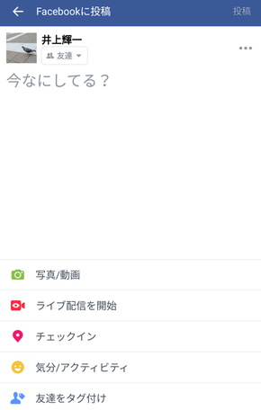
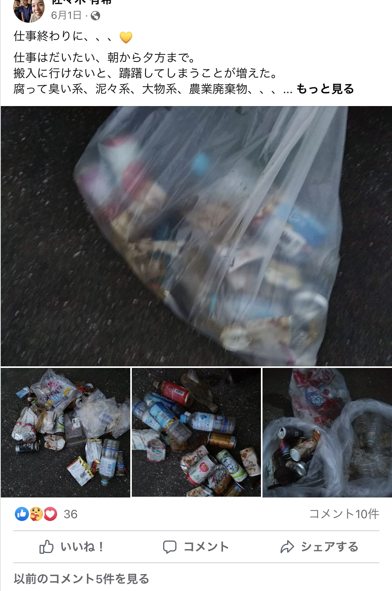
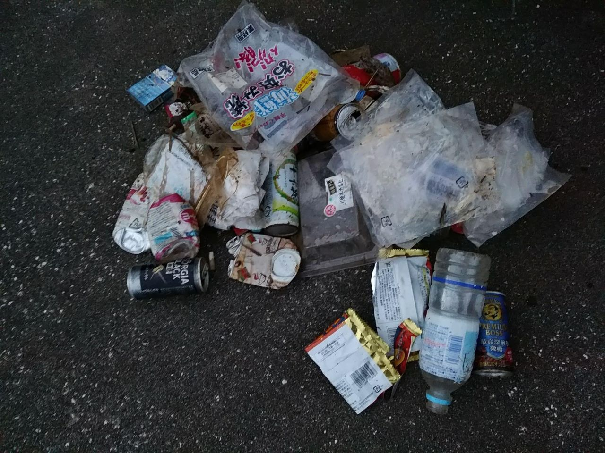

ゴミSNSへようこそ
ログインへ
ミヤコRe島エディターズ
宮古島に住む中高生が集まって、島のポイ捨て・不法投棄の問題を解決するためのアプリ開発に取り組みました。
このプロジェクトを始めるにあたって
この世界の生活は、使い捨てプラスチック製品の普及などで、土に還ることのないゴミが増えてしまいました。
この島でも足元をみれば、タバコの吸い殻、ビニール袋、ティッシュ、ストロー、ペットボトル、空き缶などの
ゴミが落ちています。
それらのゴミをみて、あなたは何を感じますか？「もし何かできたら...」と思っていたなら、「ここにゴミがあるよ」と、
写真を取って投稿することで、島のポイ捨てゴミや不法投棄ゴミを無くす手助けができます。
この島の未来を守っていきませんか？
ゴミSNSの使い方
1. ゴミを見つけたら写真を撮って投稿しよう
見つけた場所と量を入力する
投稿数によってポイントがもらえる

2. みんなの投稿を見よう
ゴミの量や種類、見つけた時間が分かる

3. ゴミを拾おう
ゴミのある場所に行ってゴミ拾いをしよう
マップを見ると一目でゴミの多い場所が分かる
